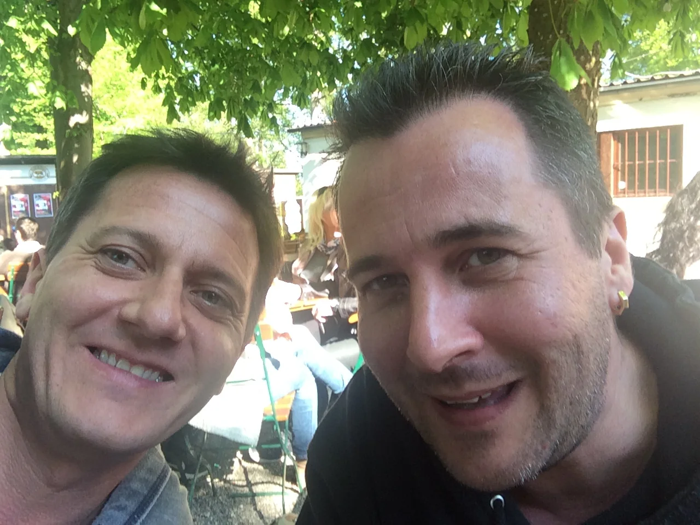

☀️ ReinholdsWetterApp 4.2
Dein Wetter auf einen Blick
--°
Wetterdaten werden geladen …
Gefühlt –
🌤️
Aktuelle Bedingungen
💨 Wind–
💧 Luftfeuchte–
🌧️ Regen heute–
☀️ UV-Index max.–
🌅 Sonnenaufgang–
🌇 Sonnenuntergang–
🌡️ Tageshöchstwert–
🌡️ Tiefstwert–
Die nächsten 24 Stunden
Stündliche VorhersageDie nächsten 7 Tage
Nach links wischen →🎬 Reinholds Werbepause
Werbung · Satire
Exklusiv bei ReinholdsWetterApp
Zwei Wetterexperten. Eine App.
Und keiner weiß, warum es regnet! 😂
1 / 6
Eine private Spaßkampagne mit echten Fotos – keine bezahlte Werbung.
🗺️ Interaktives Regenradar
Beobachtete Niederschläge · vergangene Bilder–
Radar wird geladen …
SchwachStark
Radarbilder zeigen vergangene Niederschläge, keine Vorhersage. Daten: RainViewer; Karte: © OpenStreetMap-Mitwirkende. Bei Ausfall bleibt die übrige Wetter-App nutzbar.
📈 Temperaturverlauf
Nächste 24 Stunden · Prognose🌧️ Regenradar-Ersatz
Regenchance, 12 Std.Prognose, kein echtes Niederschlagsradar.
🚴 Fahrradwetter
–🚲
Wird berechnet …
Wir prüfen Regen, Wind und Temperatur.
🚴 Beste Zeit für deine Radtour
Prognose · nächste 48 StundenWir suchen nach geeigneten 2-Stunden-Zeitfenstern anhand von Regenwahrscheinlichkeit, Wind und Temperatur. Gewitter werden ausgeschlossen.
Zeitfenster werden berechnet …